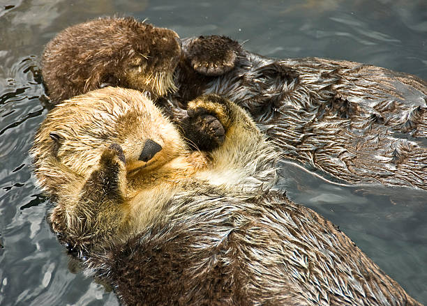
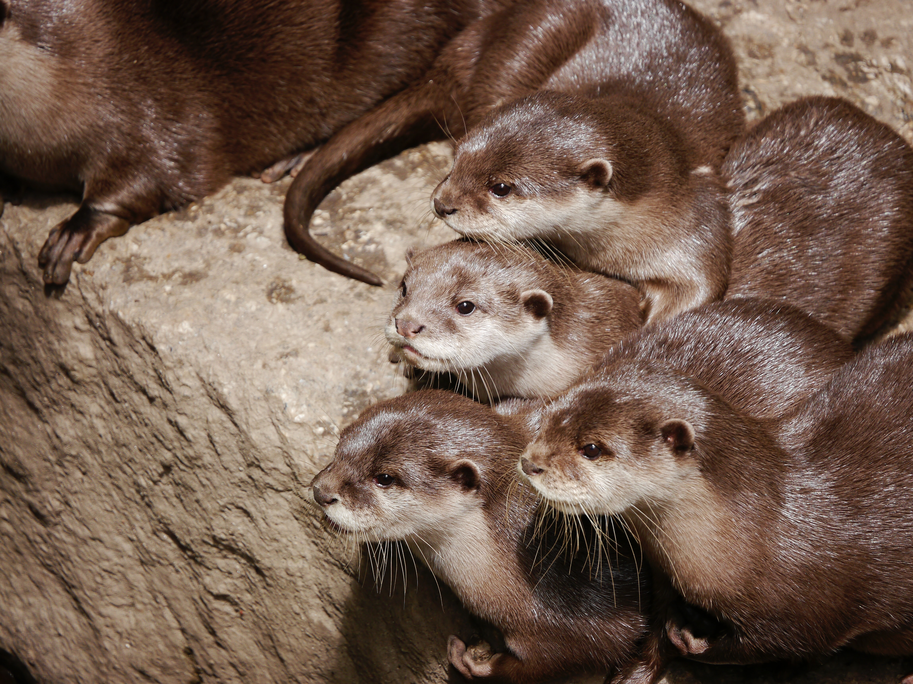
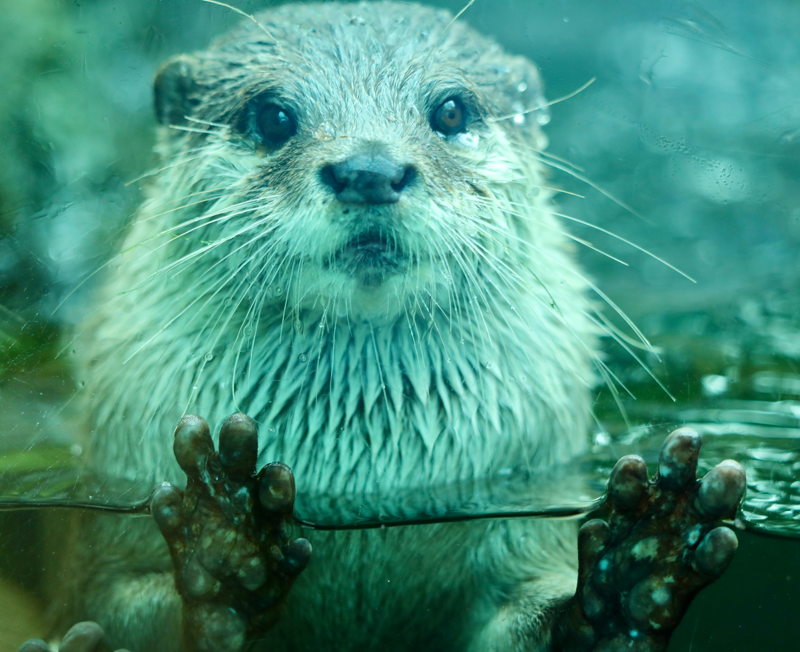

Otter Facts

Sea otters, particularly mothers and pups, sometimes hold hands while floating on their backs.

Baby otters usually are called pups. They can also be called kits or kittens. Female otters are sows, and males are boars.

Sea otters don't just have the densest fur of all otters—they have the densest fur of all animals.

Otters reach swim speeds of up to 7 miles per hour. This pace is three times faster than the average human swimmer.